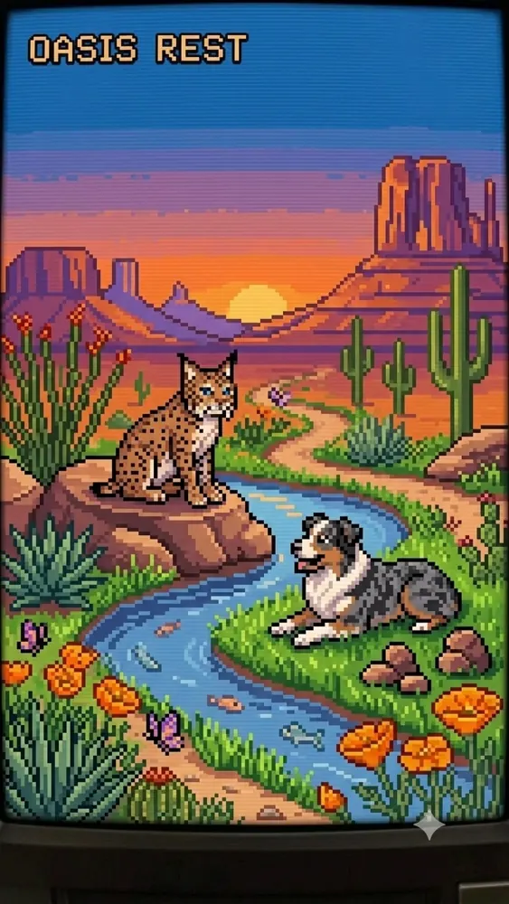

FOCUS SESSION25:00SCREEN CONCEPT
01 / PLANNED APPA wild little
A wild little
focus ritual.
A Pomodoro timer with wildlife-inspired visuals. A simple way to start a focus session, take a break, and return to what matters.
First buildStart, pause, reset, and switch between focus and rest.